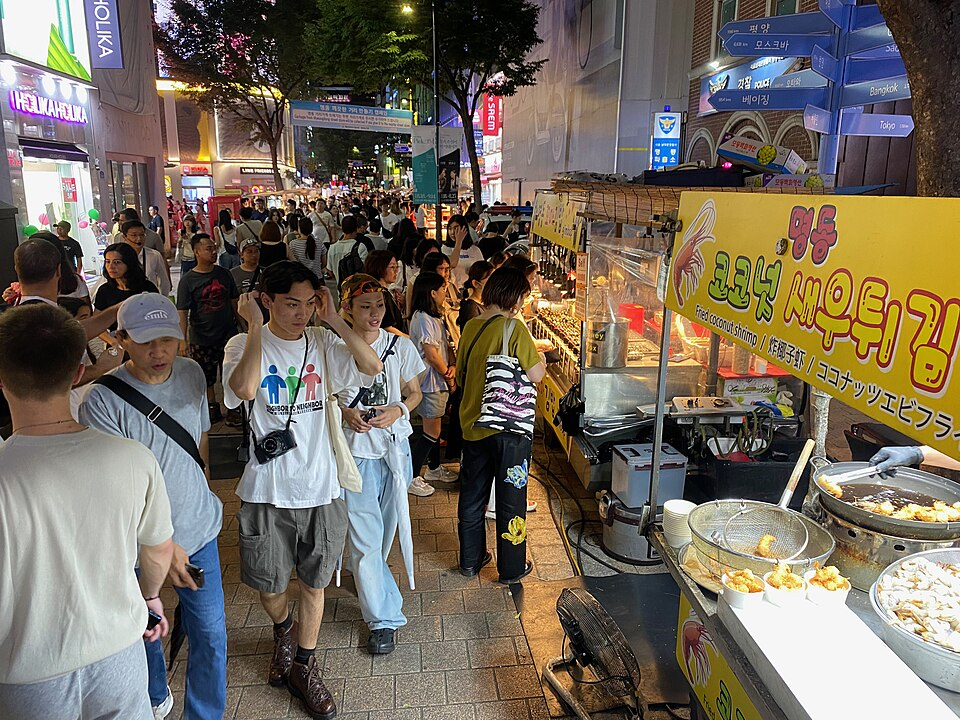
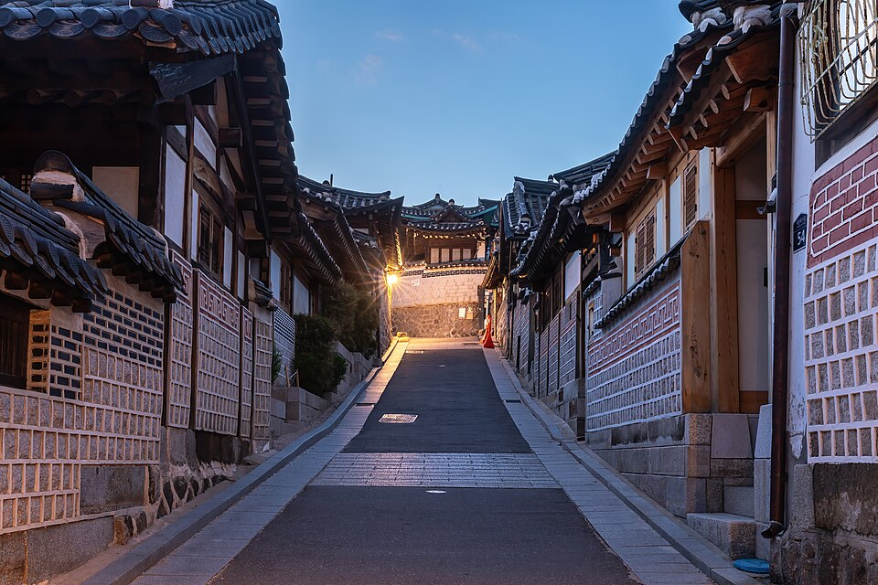

ソウル動画で見る：最近の旅動画に登場したグルメとスポット
ソウルのストリートフード動画や韓屋村の動画に登場した、부촌육회（ブチョン・ユッケ）、明洞ナイトマーケット、弘大、北村韓屋村、カフェ・オニオンを紹介する短いガイドです。
動画で見るソウル
ソウルは韓国の首都で、王宮や伝統市場が漢江とその美しい夜景のそばに並ぶ街です。食べ物の幅も広く、サムギョプサル（豚バラの網焼き）、コプチャン（牛の腸の網焼き）、노량진の海鮮ラーメン、そして広蔵市場のピンデトク（緑豆のパンケーキ）やユッケなどがあります。このガイドでは、次の3本の動画に登場するスポットをまとめました。「ウルティメート・ソウル・ストリートフード・ツアー（広蔵市場）」、「2026年のソウル・ストリートフード・ツアー（料金すべて込み）」、「韓服・韓屋村・広蔵市場・南山タワーのVlog」です。
食べる場所と見どころ
부촌육회（ブチョン・ユッケ）
韓国風の牛肉のタルタルであるユッケと、ユッケビビンバを出すお店です。ミシュランのビブグルマンに選ばれています。ユッケは広蔵市場を代表する料理のひとつなので、市場が中心のストリートフード動画で雰囲気を感じられます。生の牛肉に抵抗がある方は、牛肉をご飯と混ぜて食べるユッケビビンバから試すと気軽です。
明洞ナイトマーケット

夜にストリートフードの軽食を楽しめるスポットです。ストリートフードツアーの動画と同じく、一品に絞るより少しずつ色々な物を試すのがおすすめです。
弘大（ホンデ）

若者のエネルギーとストリートフードで知られる、活気のあるエリアです。歩きながら軽く食べ歩くスタイルに向いており、ストリートフードの行程にも自然に組み込めます。
北村韓屋村（プクチョン・ハノクマウル）

伝統的な韓国の家屋「韓屋」が立ち並ぶ、ゆっくり歩くのに適したエリアです。韓服・韓屋村のVlogにあるように、韓服を着て散策する人も多く見られます。今も実際に人が暮らしている住宅地なので、散策中は声を抑えてお過ごしください。
カフェ・オニオン
歩き疲れた時に立ち寄りやすいカフェです。散策の合間にコーヒーを飲んで一息つくのに向いています。
移動のヒント
ひとつのわかりやすい流れとして、日中は北村韓屋村を歩き、カフェ・オニオンで休憩した後、広蔵市場の雰囲気を味わいながら、부촌육회でユッケやユッケビビンバを楽しむ方法があります。日が暮れたら明洞ナイトマーケットで軽食を楽しむか、別の夜に弘大を散策するのもよいでしょう。ストリートフードは少量ずつ複数の店で食べるスタイルなので、事前に重い食事をとりすぎないのがおすすめです。訪問前に、定休日や営業時間をご確認ください。
動画に登場したお店・スポット
- 부촌육회（ブチョン・ユッケ） (부촌육회) 韓国風の牛肉タルタル（ユッケ）、ユッケビビンバ（ミシュラン・ビブグルマン） NAVER地図 Googleマップ
- 明洞ナイトマーケット (명동 야시장) ストリートフードの軽食 NAVER地図 Googleマップ
- 弘大（ホンデ） (홍대) ストリートフード NAVER地図 Googleマップ
- 北村韓屋村 (북촌한옥마을) 伝統的な韓屋村の散策 NAVER地図 Googleマップ
- カフェ・オニオン (카페 어니언) カフェ NAVER地図 Googleマップ
場所や営業時間は変わることがあります。地図で確認してください。